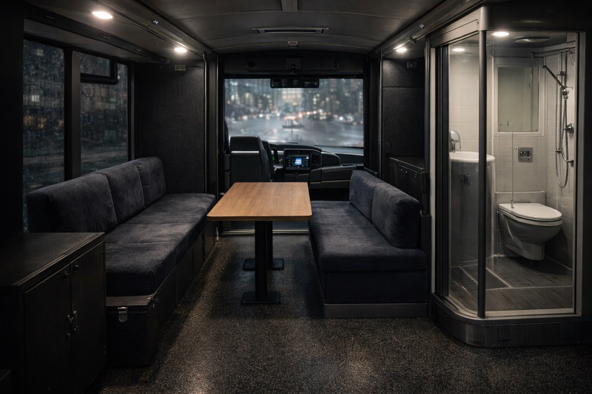
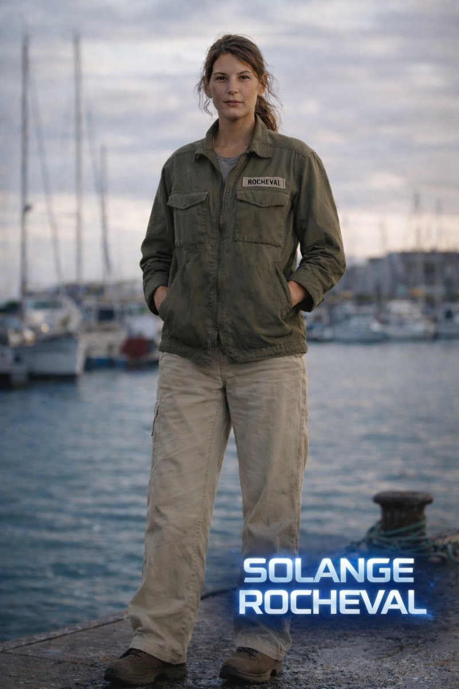

Un mardi ordinaire. Un bus. Un objet en bois, un appareil expérimental. Quand les deux se rencontrent, la ville se vide — et le voyage commence.
Gabriel Janvier, un homme ordinaire, monte dans son bus un mardi matin. Un objet mystérieux offert par son amie Elisa fusionne avec l'appareil expérimental d'un autre passager. Une lumière bleue, un minuteur apparaît — et le bus se met à glisser entre les mondes.
Gabriel, Daniel, Solange et Lara vont devoir apprendre à naviguer à travers des univers différents. Chaque saut les rapproche d'une vérité plus grande que leurs propres vies.

